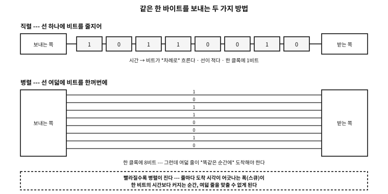
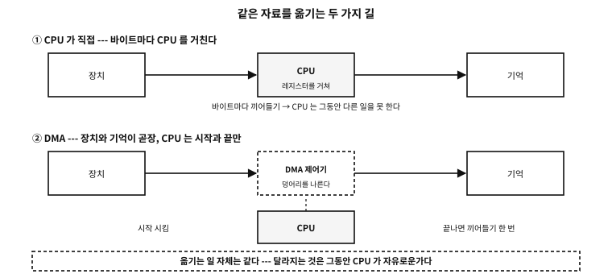

부록 M — 기계는 어떻게 이야기하는가: 선, 버스, 그리고 끼어들기
「OS 없이 도는 C」 부록에서 우리는 장치를 주소로 다뤘다. *(volatile uint8_t *)0x10000000 = 'A' 라고 쓰면 글자가 나갔다. 그런데 그 쓰기 한 번 뒤에 무슨 일이 벌어지는가? 어떤 선에 어떤 전압이 어떤 순서로 실리고, 상대는 그것을 어떻게 글자로 되돌리는가?
이 부록은 그 이야기다. 목표는 하드웨어 기술자가 되는 것이 아니라, 데이터시트의 첫 장을 읽을 수 있게 되는 것이다.
플랫폼 노트. 이 부록의 근거와 한계
먼저 알아 둘 낱말#
| 낱말 | 뜻 | 헷갈리기 쉬운 점 |
|---|---|---|
| 선(line·signal) | 전압이 실리는 한 가닥 | 「데이터 선」과 「제어 선」은 하는 일이 다르다 |
| 버스(bus) | 여러 장치가 함께 쓰는 선 묶음 | 점대점 연결(PCIe·USB)은 이름만 버스인 경우가 많다 |
| 프로토콜 | 언제 무엇을 실을지에 대한 약속 | 선이 같아도 약속이 다르면 못 알아듣는다 |
| 프레임(frame) | 한 번에 보내는 한 덩어리 | 「바이트 하나」가 아니다 — 앞뒤에 표시가 붙는다 |
| 보율(baud) | 초당 신호 변화 횟수 | 초당 비트 수와 같지 않을 수 있다(변조에 따라) |
| 처리량(throughput) | 초당 실제로 옮겨진 바이트 | 프레임의 군더더기 때문에 늘 이론값보다 작다 |
| 지연(latency) | 부탁하고 나서 응답이 오기까지의 시간 | 처리량이 커도 지연은 클 수 있다 |
| 마스터 / 타깃 | 말을 거는 쪽 / 대답하는 쪽 | 요즘 규격은 controller/target 같은 말을 쓴다 |
| 전이중 / 반이중 | 양쪽이 동시에 / 번갈아 말한다 | 선의 개수가 대개 이것을 정한다 |
표 105.1 — 이 부록에서 쓰는 낱말
★ 마지막에서 셋째 줄이 실무에서 가장 자주 오해되는 자리다. 처리량과 지연은 다른 축이다. 트럭에 하드디스크를 가득 싣고 달리면 처리량은 어마어마하지만 지연은 몇 시간이다. 반대로 I2C 는 느리지만(100 kbit/s) 한 바이트를 주고받는 지연은 밀리초 아래다.
연결을 가르는 네 축#
세상의 연결 방식은 수십 가지지만, 물어볼 것은 넷뿐이다. 이 넷만 정하면 나머지는 세부다.
| 축 | 한쪽 | 다른 쪽 | 무엇이 갈리나 |
|---|---|---|---|
| 선의 수 | 직렬 — 한 가닥에 줄지어 | 병렬 — 여러 가닥에 한꺼번에 | 핀 수와 최고 속도(그림 105.1) |
| 시간 맞추기 | 비동기 — 클록 선이 없다 | 동기 — 클록 선이 따로 있다 | 양쪽이 속도를 미리 약속해야 하는가 |
| 주소 | 없다 — 상대가 하나뿐 | 있다 — 여럿 중 하나를 부른다 | 선 하나에 장치 여럿을 달 수 있는가 |
| 누가 시작하나 | 한쪽만(마스터-타깃) | 아무나(피어·중재) | 충돌을 어떻게 막는가 |
표 105.2 — 연결을 가르는 네 축

그림 105.1 — 같은 한 바이트를 직렬로 보낼 때와 병렬로 보낼 때.
이 네 축으로 흔한 방식들을 늘어놓으면 이렇게 된다. 뒤의 절들은 이 표의 각 줄을 하나씩 푸는 것이다.
| 이름 | 선의 수 | 클록 | 주소 | 한마디로 |
|---|---|---|---|---|
| UART(universal asynchronous receiver-transmitter) / RS-232 | 직렬 2가닥(+흐름 제어) | 없다(비동기) | 없다 | 가장 오래되고 가장 단순하다 |
| 병렬 포트 | 병렬 8가닥 + 제어 | 있다(스트로브) | 없다 | 빨랐다가 속도의 벽에 걸렸다 |
| I2C | 직렬 2가닥 | 있다(SCL) | 있다(7비트) | 선 둘로 장치 여럿 |
| SPI | 직렬 4가닥 | 있다(SCK) | 선으로 고른다(CS) | 빠르고 단순하나 선을 먹는다 |
| CAN | 직렬 2가닥(차동) | 없다 | 메시지에 붙는다 | 아무나 말하고 중재로 정리한다 |
| PCIe | 직렬 레인 ×N(차동) | 내장(부호에 실림) | 있다(설정 공간) | 기계 안의 고속도로 |
| USB | 직렬 2~4가닥 | 내장 | 있다(호스트가 준다) | 호스트가 전부 시킨다 |
표 105.3 — 이 부록에서 다루는 연결들
흔한 오해. 직렬은 느리고 병렬은 빠르다
가장 오래된 선 — UART 와 RS-232#
두 기계를 잇는 가장 단순한 방법은 이것이다. 선 하나에 비트를 차례로 흘려보낸다. 클록 선도 없다. 대신 양쪽이 「초당 몇 비트」를 미리 약속해 두고, 각자 제 시계로 센다.
이 방식을 다루는 장치가 UART(universal asynchronous receiver-transmitter)다.
프레임 — 놀고 있는 선에서 글자를 오려 내는 법#
클록이 없으면 「지금부터 한 글자가 시작된다」를 어떻게 아는가? 답은 약속된 모양이다.
| 차례 | 이름 | 값 | 무엇 | 없으면 |
|---|---|---|---|---|
| — | 쉬는 상태 | 1(높음) | 아무것도 안 보낼 때의 선 | 시작을 알아볼 기준이 없다 |
| 1 | 시작 비트 | 0(낮음) | 「지금부터다」 — 받는 쪽이 여기서 시계를 맞춘다 | 글자 경계를 못 찾는다 |
| 2~9 | 자료 8비트 | 값 | 낮은 자리부터 나간다 | — |
| (선택) | 패리티 | 계산값 | 1의 개수를 짝수(또는 홀수)로 맞추는 한 비트 | 한 비트 오류를 못 알아챈다 |
| 10 | 정지 비트 | 1(높음) | 「여기서 끝」 — 다음 시작 비트와 구별된다 | 연달아 보낼 때 경계가 사라진다 |
표 105.4 — 8N1 프레임의 열 비트
8N1 이라는 표기가 이 표를 줄인 것이다.
| 자리 | 뜻 | 흔한 값 | 메모 |
|---|---|---|---|
| 첫째 숫자 | 자료 비트 수 | 8, 드물게 7 | 7비트는 ASCII 만 쓰던 시절의 흔적 |
| 가운데 글자 | 패리티 | N(없음)·E(짝수)·O(홀수) | N 이 오늘의 기본 |
| 끝 숫자 | 정지 비트 수 | 1, 드물게 2 | 2 는 느린 상대에게 숨 돌릴 틈을 준다 |
표 105.5 — 8N1 같은 표기 읽는 법
examples/apx-links/uart_frame.c
/* UART 프레임을 비트로 짓고, *보율이 어긋난 수신기*로 다시 읽어 본다.
하드웨어는 없다 --- 선 위의 전압을 잘게 썬 배열로 흉내 낸다.
한 비트를 16칸으로 나누어(흔한 UART 가 정말 이렇게 샘플링한다) 시간을 표현한다. */
#include <stdio.h>
#include <stdint.h>
#include <string.h>
#define OS 16u /* oversampling --- 한 비트를 몇 칸으로 나눌까 */
#define MAXW 4096u
/* 8N1: 시작 1 + 자료 8 + 정지 1 = 10비트. 자료는 *낮은 자리부터* 나간다. */
static size_t make_frame(unsigned char *w, uint8_t byte, unsigned parity_bits)
{
size_t n = 0;
for (unsigned i = 0; i < OS * 2; i++) w[n++] = 1; /* 놀고 있을 때는 높다 */
for (unsigned i = 0; i < OS; i++) w[n++] = 0; /* 시작 비트: 떨어뜨린다 */
unsigned ones = 0;
for (int b = 0; b < 8; b++) {
unsigned bit = byte >> b & 1; /* LSB first */
ones += bit;
for (unsigned i = 0; i < OS; i++) w[n++] = (unsigned char)bit;
}
if (parity_bits) { /* 짝수 패리티라면 */
unsigned p = ones & 1; /* 1의 개수를 짝수로 맞춘다 */
for (unsigned i = 0; i < OS; i++) w[n++] = (unsigned char)p;
}
for (unsigned i = 0; i < OS; i++) w[n++] = 1; /* 정지 비트: 다시 높다 */
for (unsigned i = 0; i < OS * 2; i++) w[n++] = 1;
return n;
}
/* 수신기: 시작 비트의 내려감을 찾고, 제 비트 길이로 한가운데를 찍어 읽는다.
rx_bit 이 16 이 아니면 그만큼 보율이 어긋난 것이다. */
static int receive(const unsigned char *w, size_t n, double rx_bit,
uint8_t *out, int *stop_ok)
{
size_t edge = 0;
while (edge < n && w[edge] != 0) edge++; /* 내려가는 자리 */
if (edge >= n) return -1;
double t0 = (double)edge;
uint8_t v = 0;
for (int b = 0; b < 8; b++) {
double at = t0 + rx_bit * (b + 1) + rx_bit / 2.0; /* (b+1)번째 비트의 한가운데 */
size_t idx = (size_t)(at + 0.5);
if (idx >= n) return -1;
v |= (uint8_t)(w[idx] << b);
}
double sat = t0 + rx_bit * 9 + rx_bit / 2.0; /* 정지 비트 자리 */
*stop_ok = (sat < n) && w[(size_t)(sat + 0.5)] == 1;
*out = v;
return 0;
}
static void show_wave(const unsigned char *w, size_t n)
{
printf(" ");
for (size_t i = 0; i < n; i += OS / 2) putchar(w[i] ? '-' : '_');
printf("\n ");
/* 비트 경계에 이름을 붙인다 */
const char *lab[] = { " ", " ", "St", "d0", "d1", "d2", "d3", "d4", "d5", "d6", "d7", "Sp", " ", " " };
for (size_t i = 0, k = 0; i < n; i += OS, k++)
printf("%-*s", (int)(OS / (OS / 2)), k < sizeof lab / sizeof *lab ? lab[k] : " ");
printf("\n");
}
int main(void)
{
unsigned char w[MAXW];
const uint8_t byte = 'K'; /* 0x4B = 0100 1011 */
printf("== the byte to send ==\n");
printf(" '%c' = 0x%02X = binary %c%c%c%c%c%c%c%c (most significant first)\n\n", byte, byte,
"01"[byte >> 7 & 1], "01"[byte >> 6 & 1], "01"[byte >> 5 & 1], "01"[byte >> 4 & 1],
"01"[byte >> 3 & 1], "01"[byte >> 2 & 1], "01"[byte >> 1 & 1], "01"[byte & 1]);
size_t n = make_frame(w, byte, 0);
printf("== the shape on the wire (8N1) --- low=_ high=- ==\n");
show_wave(w, n);
printf(" * data goes least significant bit first, so it looks reversed to the eye.\n\n");
printf("== timing ==\n");
printf(" %-10s %-14s %-14s %s\n", "baud", "one bit", "one frame (10 bits)", "bytes per second");
const long bauds[] = { 300, 9600, 19200, 115200, 921600 };
for (unsigned i = 0; i < sizeof bauds / sizeof *bauds; i++) {
double bit_us = 1e6 / (double)bauds[i];
printf(" %-10ld %-14.3f %-14.1f %.0f\n", bauds[i], bit_us, bit_us * 10,
(double)bauds[i] / 10.0);
}
printf(" (microseconds. 8N1 spends 10 bits on one byte, so 20%% is overhead)\n\n");
printf("== when the receiver's baud rate is off ==\n");
printf(" the receiver samples the middle using its own bit length; the error shifts it.\n\n");
printf(" %-12s %-10s %-8s %-8s %s\n", "rx baud", "error", "value read", "stop bit", "result");
struct { const char *name; double factor; } rx[] = {
{ "9600", 1.00 }, { "9700", 9600.0 / 9700 }, { "9900", 9600.0 / 9900 },
{ "10100", 9600.0 / 10100 }, { "10600", 9600.0 / 10600 }, { "19200", 9600.0 / 19200 },
};
for (unsigned i = 0; i < sizeof rx / sizeof *rx; i++) {
uint8_t got; int stop_ok;
double rx_bit = OS * rx[i].factor;
if (receive(w, n, rx_bit, &got, &stop_ok) != 0) { printf(" %-12s could not read\n", rx[i].name); continue; }
double err = (1.0 / rx[i].factor - 1.0) * 100.0;
printf(" %-12s %+7.1f%% 0x%02X %-8s %s\n", rx[i].name, err, got,
stop_ok ? "ok" : "broken",
got == byte && stop_ok ? "'K' --- correct"
: got == byte ? "value right, frame lost"
: "character corrupted");
}
/* 임계점을 *찾아본다* --- 통설을 옮겨 적는 대신 프로그램이 재게 한다 */
double lo = 0, hi = 0;
for (double e = -20.0; e <= 20.0; e += 0.05) {
double rx_bit = OS / (1.0 + e / 100.0);
uint8_t g; int ok;
int good = receive(w, n, rx_bit, &g, &ok) == 0 && g == byte && ok;
if (good && lo == 0 && hi == 0) lo = e;
if (good) hi = e;
}
printf("\n range of error where the character survives here: %+.1f%% to %+.1f%%\n", lo, hi);
printf(" * the arithmetic agrees. The stop bit is sampled at 9.5 bit times,\n");
printf(" and that instant must fall within that bit (one bit wide), so\n");
printf(" 0.5 / 9.5 = %.1f%% is the margin on one side.\n", 0.5 / 9.5 * 100.0);
printf(" * yet practice uses 2 to 3%% as the rule. This %.1f%% is shared by both ends\n",
0.5 / 9.5 * 100.0);
printf(" (the sender drifts too), oscillators move with temperature and supply,\n");
printf(" and a real receiver samples three points and takes a majority.\n");
printf(" The theoretical limit and the design budget are different numbers.\n");
printf("\n== what parity catches ==\n");
size_t np = make_frame(w, byte, 1);
uint8_t got; int stop_ok;
receive(w, np, OS, &got, &stop_ok);
unsigned ones = 0; for (int b = 0; b < 8; b++) ones += byte >> b & 1;
printf(" '%c' has %u ones -> even parity bit = %u\n", byte, ones, ones & 1);
printf(" one flipped bit changes the parity, so it is caught.\n");
printf(" two flipped bits leave the parity unchanged, so it is not --- parity\n");
printf(" is a device for noticing an error, not for correcting one.\n");
return 0;
}
실행 결과
== the byte to send ==
'K' = 0x4B = binary 01001011 (most significant first)
== the shape on the wire (8N1) --- low=_ high=- ==
----__----__--____--__------
Std0d1d2d3d4d5d6d7Sp
* data goes least significant bit first, so it looks reversed to the eye.
== timing ==
baud one bit one frame (10 bits) bytes per second
300 3333.333 33333.3 30
9600 104.167 1041.7 960
19200 52.083 520.8 1920
115200 8.681 86.8 11520
921600 1.085 10.9 92160
(microseconds. 8N1 spends 10 bits on one byte, so 20% is overhead)
== when the receiver's baud rate is off ==
the receiver samples the middle using its own bit length; the error shifts it.
rx baud error value read stop bit result
9600 +0.0% 0x4B ok 'K' --- correct
9700 +1.0% 0x4B ok 'K' --- correct
9900 +3.1% 0x4B ok 'K' --- correct
10100 +5.2% 0x4B ok 'K' --- correct
10600 +10.4% 0x8B broken character corrupted
19200 +100.0% 0x9E ok character corrupted
range of error where the character survives here: -5.2% to +5.9%
* the arithmetic agrees. The stop bit is sampled at 9.5 bit times,
and that instant must fall within that bit (one bit wide), so
0.5 / 9.5 = 5.3% is the margin on one side.
* yet practice uses 2 to 3% as the rule. This 5.3% is shared by both ends
(the sender drifts too), oscillators move with temperature and supply,
and a real receiver samples three points and takes a majority.
The theoretical limit and the design budget are different numbers.
== what parity catches ==
'K' has 4 ones -> even parity bit = 0
one flipped bit changes the parity, so it is caught.
two flipped bits leave the parity unchanged, so it is not --- parity
is a device for noticing an error, not for correcting one.
시연이 네 가지를 보인다.
첫째, 자료는 낮은 자리부터 나간다. 선 위의 모양을 눈으로 읽으면 이진수가 뒤집혀 보이는 이유다.
둘째, 8N1 은 바이트 하나에 열 비트를 쓴다. 그래서 9600 보율은 초당 960바이트다 — 20%가 틀을 유지하는 데 쓰이는 군더더기다.
셋째, 보율이 어긋나면 어긋남이 쌓인다. 시작 비트에서 시계를 맞추지만, 열 번째 비트에 이를 때까지 오차가 아홉 배 반으로 불어난다. 시연이 임계를 직접 찾아 약 ±5% 라고 답했고, 셈으로도 0.5 / 9.5 = 5.3% 가 나온다.
넷째, 그런데 실무 규칙은 「2~3%」다. 이 두 수가 다른 것이 중요하다 — 이론 한계는 양쪽이 나눠 갖고, 온도·전원에 따라 발진기가 흔들리며, 실제 수신기는 여러 점을 찍어 다수결한다. 53장의 말로 하면, 계약은 한계가 아니라 여유를 남긴 예산이다.
문. 왜 하필 9600, 19200, 115200 같은 어중간한 수인가?
답. 옛 UART 칩이 쓰던 수정 발진기가 1.8432 MHz 였고, 그것을 정수로 나누면 이 수들이 나온다(1.8432 MHz ÷ 16 ÷ 12 = 9600). 「깔끔한 십진수」가 아니라 정수 분주로 만들 수 있는 수가 표준이 된 것이다. 그래서 어떤 클록에서는 115200 을 정확히 만들 수 없고, 그때 생기는 오차가 위의 예산을 갉아먹는다.
RS-232 — 같은 프레임, 다른 전압#
UART 는 논리이고, RS-232 는 그것을 선에 싣는 전기 규격이다. 둘을 섞어 쓰다 태워 먹는 일이 흔하므로 표로 갈라 둔다.
| TTL/CMOS UART | RS-232 | |
|---|---|---|
| 1(mark) | 3.3 V 또는 5 V | −3 V ~ −15 V |
| 0(space) | 0 V | +3 V ~ +15 V |
| 논리 | 높음이 1 | 뒤집혀 있다 — 음이 1 |
| 닿는 거리 | 보드 위 몇 cm | 십수 m |
| 직접 이으면 | — | 전압이 달라 칩이 상한다 — 사이에 변환기가 필요 |
표 105.6 — TTL 수준 UART 와 RS-232
★ 표의 마지막 줄이 실무에서 물건을 태우는 자리다. 마이크로컨트롤러의 UART 핀에 컴퓨터의 시리얼 포트를 바로 물리면 안 된다 — MAX232 같은 변환기가 사이에 있어야 한다.
| 이름 | 방향 | 무엇 | 요즘 |
|---|---|---|---|
| TxD | 나감 | 보내는 자료 | 늘 쓴다 |
| RxD | 들어옴 | 받는 자료 | 늘 쓴다 |
| GND | — | 기준 전압 — 없으면 아무것도 안 된다 | 늘 쓴다 |
| RTS / CTS | 나감 / 들어옴 | 「보내도 되나」 — 하드웨어 흐름 제어 | 빠른 연결에서 쓴다 |
| DTR / DSR | 나감 / 들어옴 | 「나 켜져 있다」 — 장치 준비 상태 | 모뎀 시절의 흔적 |
| DCD | 들어옴 | 모뎀이 상대와 연결됨 | 거의 안 쓴다 |
| RI | 들어옴 | 전화가 왔다 | 거의 안 쓴다 |
표 105.7 — RS-232 의 신호선(9핀 기준)
흐름 제어 — 「잠깐만」이라고 말하는 법#
받는 쪽이 처리하지 못하면 자료가 그냥 사라진다. UART 에는 재전송이 없다.
| 방식 | 어떻게 | 장점 | 단점 |
|---|---|---|---|
| 하드웨어 (RTS/CTS) | 따로 있는 선을 내려 「멈춰」라고 말한다 | 자료를 건드리지 않는다. 즉시 멈춘다 | 선이 두 가닥 더 필요하다 |
| 소프트웨어 (XON/XOFF) | 자료 흐름 안에 0x13·0x11 을 끼워 보낸다 | 선 세 가닥이면 된다 | 이진 자료를 못 보낸다 — 그 바이트가 나오면 오해한다 |
표 105.8 — 흐름 제어의 두 방식
반례. 이진 자료를 XON/XOFF 회선으로 보낸다
0x13 바이트가 나오면 상대는 그것을 「멈춰」로 읽는다. 그 순간 전송이 얼어붙고, 다시는 안 풀릴 수도 있다. 이진 자료를 보낼 회선에서는 하드웨어 흐름 제어를 쓰거나, 자료를 텍스트로 인코딩해야 한다.UART 가 알려 주는 오류 넷#
| 이름 | 언제 | 대개 무슨 뜻인가 |
|---|---|---|
| 프레이밍 오류 | 정지 비트 자리가 낮았다 | 보율이 다르거나 선이 흔들렸다 |
| 패리티 오류 | 1의 개수가 약속과 다르다 | 잡음 — 한 비트가 뒤집혔다 |
| 오버런 | 읽기 전에 다음 바이트가 왔다 | 내 코드가 늦었다 — 인터럽트나 DMA 가 필요하다 |
| 브레이크 | 한 프레임 넘게 계속 낮았다 | 상대가 일부러 보낸 신호, 또는 선이 끊겨 접지에 붙었다 |
표 105.9 — UART 상태 레지스터에서 만나는 오류
★ 셋째 줄이 이 부록의 뒷부분과 이어진다. 오버런은 하드웨어가 아니라 소프트웨어의 문제다 — 바이트마다 끼어들기를 받아 처리하기에 벅차지면, 그때 필요한 것이 DMA(direct memory access)다.
병렬은 왜 사라졌나#
한 번에 여덟 비트를 보내면 여덟 배 빠를 것 같다. 실제로 한동안 그랬다. 프린터를 잇던 센트로닉스 포트가 그 방식이다.
| 무리 | 선 | 무엇 | 방향 |
|---|---|---|---|
| 자료 | D0 ~ D7 | 여덟 비트를 한꺼번에 | 나감 |
| 제어 | STROBE | 「지금 자료가 유효하다」 — 사실상의 클록 | 나감 |
| 상태 | ACK | 「받았다」 | 들어옴 |
| 상태 | BUSY | 「아직 처리 중이니 기다려라」 | 들어옴 |
| 상태 | PAPER OUT · SELECT · ERROR | 프린터의 사정 | 들어옴 |
| 기준 | GND ×8 | 자료선마다 접지를 짝지어 잡음을 줄인다 | — |
표 105.10 — 병렬(센트로닉스) 포트의 신호들
빠른데도 사라진 이유가 그림 105.1에 있다. 여덟 줄이 똑같은 순간에 도착해야 한다는 조건이 속도의 벽이 된다.
| 문제 | 무엇인가 | 빨라지면 |
|---|---|---|
| 스큐(skew) | 줄마다 길이·부하가 달라 도착 시각이 어긋난다 | 한 비트의 시간이 어긋남보다 짧아지는 순간 못 맞춘다 |
| 크로스토크 | 옆 줄의 변화가 이웃 줄에 새어 든다 | 변화가 빨라질수록 심해진다 |
| 핀과 값 | 줄이 여덟이면 커넥터·기판·차폐가 여덟 벌 | 비싸고 두껍고 구부러지지 않는다 |
| 끝맺음 | 줄마다 임피던스를 맞춰야 반사가 안 생긴다 | 수백 MHz 를 넘기면 사실상 불가능 |
표 105.11 — 빨라질수록 병렬이 지는 이유
★ 그래서 오늘의 답은 「병렬을 버린 것」이 아니라 「직렬 한 벌을 아주 빠르게 만들고, 그것을 여러 벌 묶는 것」이다. PCIe 의 레인, USB 3 의 여러 쌍, SATA 가 전부 그 모양이다. 줄 사이의 시각을 맞추는 일은 하드웨어가 각 줄을 따로 복원한 뒤 다시 모으는 방식으로 푼다 — 줄마다 제 클록을 부호 안에 실어 보내기에 그럴 수 있다.
두 선으로 여럿 — I2C#
선을 최대한 아끼고 싶을 때 쓰는 방식이다. 선 둘(자료 SDA, 클록 SCL)에 장치 여럿을 매달고, 주소로 골라 부른다.
| 이름 | 무엇 | 어떻게 만드나 | 왜 그렇게 |
|---|---|---|---|
| SCL | 클록 | 주인이 흔든다 | 동기 방식 — 속도를 미리 약속할 필요가 없다 |
| SDA | 자료 | 양쪽이 번갈아 쓴다 | 반이중 — 한 번에 한 방향 |
| START | 「지금부터 거래」 | SCL 이 높은 동안 SDA 를 내린다 | 자료는 SCL 이 낮을 때만 바뀐다는 규칙을 일부러 어겨 만든 표시 |
| STOP | 「끝」 | SCL 이 높은 동안 SDA 를 올린다 | 〃 |
| 반복 START | 「끝내지 않고 방향만 바꿈」 | STOP 없이 START 를 또 | 그 사이 다른 주인이 끼어들지 못한다 |
| ACK / NACK | 「받았다」/「없거나 그만」 | 아홉 번째 클록에서 받는 쪽이 SDA 를 내린다/안 내린다 | 선을 「내리기만」 할 수 있으니 가능한 방식 |
표 105.12 — I2C 의 신호와 표시
examples/apx-links/i2c_frame.c
/* I2C 거래 하나를 신호 차례로 짓고, 그 차례를 다시 읽어 해독한다.
선은 둘뿐이다: SCL(클록)과 SDA(자료). 둘 다 「끌어내리기만」 할 수 있다(오픈 드레인). */
#include <stdio.h>
#include <stdint.h>
#include <string.h>
enum { EV_START, EV_BIT, EV_ACK, EV_NACK, EV_RSTART, EV_STOP };
struct ev { int kind; int val; const char *note; };
static struct ev log_[256];
static int n_ev;
static void put(int kind, int val, const char *note)
{ log_[n_ev++] = (struct ev){ kind, val, note }; }
/* 바이트 하나 --- 높은 자리부터 여덟 비트, 그다음 아홉 번째 클록이 ACK 자리 */
static void put_byte(uint8_t b, const char *what, int acked)
{
for (int i = 7; i >= 0; i--) put(EV_BIT, b >> i & 1, i == 7 ? what : NULL);
put(acked ? EV_ACK : EV_NACK, acked ? 0 : 1, NULL);
}
static const char *kind_name(int k)
{
switch (k) {
case EV_START: return "START";
case EV_RSTART: return "repeated START";
case EV_STOP: return "STOP";
case EV_ACK: return "ACK";
case EV_NACK: return "NACK";
default: return "bits";
}
}
int main(void)
{
const uint8_t dev = 0x3C; /* 7비트 장치 주소 */
const uint8_t reg = 0x00, val = 0xAF;
printf("== why the address is confusing ==\n");
printf(" the 7-bit address 0x%02X is shifted one place on the wire (last bit is read/write).\n", dev);
printf(" write: 0x%02X << 1 | 0 = 0x%02X\n", dev, dev << 1);
printf(" read : 0x%02X << 1 | 1 = 0x%02X\n", dev, dev << 1 | 1);
printf(" so datasheets call the same device 0x%02X in one place and 0x%02X in another.\n\n",
dev, dev << 1);
/* ── 쓰기 거래: 장치에게 「레지스터 0 에 0xAF 를 써라」 ── */
put(EV_START, 0, "the controller takes the bus");
put_byte((uint8_t)(dev << 1 | 0), "device address + write", 1);
put_byte(reg, "register number", 1);
put_byte(val, "value to write", 1);
put(EV_STOP, 0, "release the bus");
/* ── 읽기 거래: 반복 START 로 방향만 바꾼다 ── */
put(EV_START, 0, "take it again");
put_byte((uint8_t)(dev << 1 | 0), "device address + write", 1);
put_byte(reg, "say which register to read first", 1);
put(EV_RSTART, 0, "* START again without STOP --- nobody can cut in meanwhile");
put_byte((uint8_t)(dev << 1 | 1), "device address + read", 1);
put_byte(val, "the value the device returned", 0); /* 마지막 바이트는 주인이 NACK 로 끝을 알린다 */
put(EV_STOP, 0, "end");
printf("== the order on the wire ==\n");
int bitpos = 0; uint8_t acc = 0;
for (int i = 0; i < n_ev; i++) {
struct ev *e = &log_[i];
if (e->kind == EV_BIT) {
acc = (uint8_t)(acc << 1 | e->val);
if (++bitpos == 8) {
printf(" %-12s 0x%02X %s\n", "byte", acc,
log_[i - 7].note ? log_[i - 7].note : "");
bitpos = 0; acc = 0;
}
} else {
printf(" %-12s %s%s\n", kind_name(e->kind),
e->kind == EV_ACK ? "the device pulled SDA down = received" :
e->kind == EV_NACK ? "nobody pulled it down = absent, or done" : "",
e->note ? e->note : "");
}
}
printf("\n== what means what ==\n");
printf(" START : SDA falls while SCL is high (deliberately breaking the rule that\n");
printf(" STOP : SDA rises while SCL is high data changes only while SCL is low)\n");
printf(" ACK : on the ninth clock the receiver pulls SDA down\n");
printf(" NACK : nobody pulls it down and the line stays high --- absent and enough look alike\n");
printf("\n== timing ==\n");
int bits = 0, extra = 0;
for (int i = 0; i < n_ev; i++)
(log_[i].kind == EV_BIT) ? bits++ : (log_[i].kind == EV_ACK || log_[i].kind == EV_NACK) ? bits++ : extra++;
printf(" clocks in these two transactions: %d (data and ACK bits), %d markers\n", bits, extra);
printf(" %-14s %-14s %s\n", "speed mode", "clock", "time for these two transactions");
struct { const char *name; double hz; } modes[] = {
{ "standard", 100e3 }, { "fast", 400e3 }, { "fast plus", 1e6 }, { "high speed", 3.4e6 },
};
for (unsigned i = 0; i < sizeof modes / sizeof *modes; i++)
printf(" %-14s %-14.1f %.1f microseconds\n", modes[i].name, modes[i].hz / 1000,
bits / modes[i].hz * 1e6);
printf(" (clock in kHz; markers and wait states are not counted)\n");
printf("\n== why the lines are only ever pulled down ==\n");
printf(" if two devices speak at once, one pushing 5V and one pushing 0V, current\n");
printf(" flows straight through and damages the chips. I2C lets nobody push (open drain)\n");
printf(" and leaves the raising to a resistor. So speaking at once is safe,\n");
printf(" and the property that zero wins gives arbitration and ACK for free.\n");
return 0;
}
실행 결과
== why the address is confusing ==
the 7-bit address 0x3C is shifted one place on the wire (last bit is read/write).
write: 0x3C << 1 | 0 = 0x78
read : 0x3C << 1 | 1 = 0x79
so datasheets call the same device 0x3C in one place and 0x78 in another.
== the order on the wire ==
START the controller takes the bus
byte 0x78 device address + write
ACK the device pulled SDA down = received
byte 0x00 register number
ACK the device pulled SDA down = received
byte 0xAF value to write
ACK the device pulled SDA down = received
STOP release the bus
START take it again
byte 0x78 device address + write
ACK the device pulled SDA down = received
byte 0x00 say which register to read first
ACK the device pulled SDA down = received
repeated START * START again without STOP --- nobody can cut in meanwhile
byte 0x79 device address + read
ACK the device pulled SDA down = received
byte 0xAF the value the device returned
NACK nobody pulled it down = absent, or done
STOP end
== what means what ==
START : SDA falls while SCL is high (deliberately breaking the rule that
STOP : SDA rises while SCL is high data changes only while SCL is low)
ACK : on the ninth clock the receiver pulls SDA down
NACK : nobody pulls it down and the line stays high --- absent and enough look alike
== timing ==
clocks in these two transactions: 63 (data and ACK bits), 5 markers
speed mode clock time for these two transactions
standard 100.0 630.0 microseconds
fast 400.0 157.5 microseconds
fast plus 1000.0 63.0 microseconds
high speed 3400.0 18.5 microseconds
(clock in kHz; markers and wait states are not counted)
== why the lines are only ever pulled down ==
if two devices speak at once, one pushing 5V and one pushing 0V, current
flows straight through and damages the chips. I2C lets nobody push (open drain)
and leaves the raising to a resistor. So speaking at once is safe,
and the property that zero wins gives arbitration and ACK for free.
세 가지가 실무에서 바로 쓰인다.
첫째, 주소가 두 가지로 적히는 까닭. 7비트 주소는 선 위에서 한 칸 왼쪽으로 밀려 실리고 맨 끝에 읽기/쓰기 비트가 붙는다. 그래서 같은 장치가 데이터시트에 따라 0x3C 로도 0x78 로도 적힌다. 둘 다 맞다 — 하나는 주소, 하나는 「선 위의 첫 바이트」다.
둘째, NACK 는 두 가지 뜻이다. 「그런 장치 없다」와 「이제 그만 보내라」가 선 위에서 같은 모양이다. 읽기의 마지막 바이트에 주인이 NACK 를 보내 끝을 알리는 것이 규약이다.
셋째, 선을 「내리기만」 하는 설계가 많은 것을 공짜로 만든다. 아무도 전압을 밀어 올리지 않으므로 둘이 동시에 말해도 칩이 상하지 않고, 「0 이 이긴다」는 성질에서 ACK 와 중재가 그냥 나온다. 대신 올리는 일은 저항이 하므로 올라가는 속도가 느리고, 그것이 I2C 속도의 상한을 만든다.
| 이름 | 클록 | 초당 바이트(어림) | 메모 |
|---|---|---|---|
| 표준 | 100 kHz | 약 11,000 | 센서 대부분 |
| 빠름 | 400 kHz | 약 44,000 | 요즘 기본 |
| 빠름+ | 1 MHz | 약 110,000 | 배선이 짧아야 한다 |
| 고속 | 3.4 MHz | 약 380,000 | 전용 회로가 필요 — 흔치 않다 |
표 105.13 — I2C 의 속도 모드
문. I2C 장치를 여럿 달았더니 하나도 안 잡힌다. 무엇부터 보나?
답. 넷을 순서대로 본다. ① 풀업 저항이 있는가(없으면 선이 절대 올라가지 않는다). ② 주소가 겹치지 않는가(같은 종류의 센서 둘은 대개 겹친다 — 주소 핀으로 바꾼다). ③ 접지를 공유하는가. ④ 배선이 너무 길거나 장치가 많아 올라가는 시간이 늦지 않은가. 넷 중 셋이 「전기」의 문제이고 하나만 「소프트웨어」의 문제다.
네 선으로 빠르게 — SPI#
I2C 가 선을 아끼는 대신 속도를 포기했다면, SPI 는 반대다. 선을 넷 쓰고 대신 빠르다.
| 이름 | 다른 이름 | 무엇 | 방향 |
|---|---|---|---|
| SCK | SCLK, CLK | 클록 — 주인이 흔든다 | 주인 → 장치 |
| MOSI | SDO, COPI | 주인이 보내는 자료 | 주인 → 장치 |
| MISO | SDI, CIPO | 장치가 보내는 자료 | 장치 → 주인 |
| CS | SS, NSS, CE | 이 장치에게 말한다는 표시(대개 낮을 때 선택) | 주인 → 장치 |
표 105.14 — SPI 의 네 선
★ 주소가 없다. 대신 장치마다 CS 선을 한 가닥씩 뽑는다. 장치가 늘면 선이 는다 — I2C 와 정확히 반대의 맞바꿈이다.
examples/apx-links/spi_shift.c
/* SPI 는 「고리 모양으로 이어 붙인 시프트 레지스터 둘」이다.
클록마다 한 비트씩 서로 밀어 넣는다 --- 그래서 주고받기가 *동시에* 일어난다. */
#include <stdio.h>
#include <stdint.h>
static void bits8(uint8_t v, char *out)
{ for (int i = 0; i < 8; i++) out[i] = (char)('0' + (v >> (7 - i) & 1)); out[8] = 0; }
int main(void)
{
uint8_t m = 0xA5; /* 주인이 보낼 값 */
uint8_t s = 0x3C; /* 장치가 보낼 값 (미리 제 레지스터에 넣어 둔다) */
char mb[9], sb[9];
bits8(m, mb); bits8(s, sb);
printf("== at the start ==\n");
printf(" controller register : 0x%02X (%s)\n", m, mb);
printf(" device register : 0x%02X (%s)\n\n", s, sb);
printf("== one bit per clock ==\n");
printf(" %-6s %-6s %-6s %-12s %-12s\n", "clock", "MOSI", "MISO", "controller", "device");
for (int c = 1; c <= 8; c++) {
unsigned mosi = m >> 7 & 1; /* 주인이 내놓는 비트 (높은 자리부터) */
unsigned miso = s >> 7 & 1; /* 장치가 내놓는 비트 */
m = (uint8_t)(m << 1 | miso); /* 서로의 비트를 낮은 자리로 받아 넣는다 */
s = (uint8_t)(s << 1 | mosi);
bits8(m, mb); bits8(s, sb);
printf(" %-6d %-6u %-6u %-12s %-12s\n", c, mosi, miso, mb, sb);
}
printf("\n== after eight clocks ==\n");
printf(" controller register : 0x%02X <- what the device sent\n", m);
printf(" device register : 0x%02X <- what the controller sent\n", s);
printf(" * sending and receiving finished in the same eight clocks. Full duplex is\n");
printf(" free because the two registers form one ring. Even with nothing to receive\n");
printf(" something must be sent (usually 0x00 or 0xFF): a dummy byte.\n");
printf("\n== the four modes --- which edge presents, which samples ==\n");
printf(" %-8s %-6s %-6s %-16s %s\n", "mode", "CPOL", "CPHA", "SCK at rest", "sampling edge");
for (int mode = 0; mode < 4; mode++) {
int cpol = mode >> 1, cpha = mode & 1;
printf(" %-8d %-6d %-6d %-16s %s\n", mode, cpol, cpha,
cpol ? "high" : "low",
cpha == 0 ? (cpol ? "falling (first edge)" : "rising (first edge)")
: (cpol ? "rising (second edge)" : "falling (second edge)"));
}
printf("\n== when the mode is mismatched ==\n");
uint8_t src = 0xA5, wrong = 0, prev = 0;
for (int c = 0; c < 8; c++) {
unsigned bit = src >> (7 - c) & 1;
wrong = (uint8_t)(wrong << 1 | prev); /* 한 모서리 늦게 읽으면 *직전* 비트를 본다 */
prev = bit;
}
bits8(0xA5, mb); bits8(wrong, sb);
printf(" sent 0xA5 (%s)\n", mb);
printf(" read with one edge of error: 0x%02X (%s) <- everything shifted one place\n", wrong, sb);
printf(" * so when SPI gives half-right values, suspect the mode first.\n");
printf("\n== speed ==\n");
printf(" SPI has no start, stop, address or ACK. Exactly eight clocks per byte.\n");
printf(" %-14s %-16s %s\n", "SCK", "bytes per second", "compared");
struct { const char *name; double hz; } sck[] = {
{ "1 MHz", 1e6 }, { "10 MHz", 10e6 }, { "50 MHz", 50e6 },
};
const double i2c_std = 100e3 / 9.0; /* I2C 표준 모드: 바이트마다 9비트 */
for (unsigned i = 0; i < sizeof sck / sizeof *sck; i++)
printf(" %-14s %-16.0f %.0f times I2C standard (100 kHz)\n", sck[i].name, sck[i].hz / 8,
(sck[i].hz / 8) / i2c_std);
printf(" (UART spends 10 bits per byte, I2C 9, SPI 8 --- no overhead)\n");
return 0;
}
실행 결과
== at the start ==
controller register : 0xA5 (10100101)
device register : 0x3C (00111100)
== one bit per clock ==
clock MOSI MISO controller device
1 1 0 01001010 01111001
2 0 0 10010100 11110010
3 1 1 00101001 11100101
4 0 1 01010011 11001010
5 0 1 10100111 10010100
6 1 1 01001111 00101001
7 0 0 10011110 01010010
8 1 0 00111100 10100101
== after eight clocks ==
controller register : 0x3C <- what the device sent
device register : 0xA5 <- what the controller sent
* sending and receiving finished in the same eight clocks. Full duplex is
free because the two registers form one ring. Even with nothing to receive
something must be sent (usually 0x00 or 0xFF): a dummy byte.
== the four modes --- which edge presents, which samples ==
mode CPOL CPHA SCK at rest sampling edge
0 0 0 low rising (first edge)
1 0 1 low falling (second edge)
2 1 0 high falling (first edge)
3 1 1 high rising (second edge)
== when the mode is mismatched ==
sent 0xA5 (10100101)
read with one edge of error: 0x52 (01010010) <- everything shifted one place
* so when SPI gives half-right values, suspect the mode first.
== speed ==
SPI has no start, stop, address or ACK. Exactly eight clocks per byte.
SCK bytes per second compared
1 MHz 125000 11 times I2C standard (100 kHz)
10 MHz 1250000 112 times I2C standard (100 kHz)
50 MHz 6250000 562 times I2C standard (100 kHz)
(UART spends 10 bits per byte, I2C 9, SPI 8 --- no overhead)
시연이 SPI 의 본질을 보인다. 두 시프트 레지스터가 하나의 고리를 이룬다. 클록마다 한 비트씩 밀어 넣으면 여덟 클록 뒤에 두 값이 서로 자리를 바꾼다. 그래서 「보내면서 동시에 받는」 것이 공짜다 — 그리고 받기만 하고 싶어도 무언가는 보내야 한다(더미 바이트).
| 모드 | CPOL | CPHA | 쉴 때 클록 | 읽는 모서리 |
|---|---|---|---|---|
| 0 | 0 | 0 | 낮다 | 올라가는 쪽(첫 모서리) |
| 1 | 0 | 1 | 낮다 | 내려가는 쪽(둘째 모서리) |
| 2 | 1 | 0 | 높다 | 내려가는 쪽(첫 모서리) |
| 3 | 1 | 1 | 높다 | 올라가는 쪽(둘째 모서리) |
표 105.15 — SPI 의 네 모드
흔한 오해. SPI 는 규격이 있으니 아무 장치나 물리면 된다
| I2C | SPI | 그래서 | |
|---|---|---|---|
| 선 | 2가닥(장치가 늘어도 그대로) | 3 + 장치마다 1가닥 | 장치가 많으면 I2C |
| 속도 | 100 kHz ~ 1 MHz | 수십 MHz | 빨라야 하면 SPI |
| 바이트당 비트 | 9 (ACK 포함) | 8 | SPI 가 군더더기도 없다 |
| 주고받기 | 반이중 | 전이중 | 동시에 주고받아야 하면 SPI |
| 받았는지 확인 | ACK 가 있다 | 없다 | SPI 는 상대가 죽어도 모른다 |
| 규격 | 문서로 정해져 있다 | 관습 | SPI 는 데이터시트를 꼭 읽어야 한다 |
표 105.16 — I2C 와 SPI 를 견주면
한 선으로도, 그리고 아무나 말해도 — 1-Wire 와 CAN#
| 이름 | 선 | 발상 | 어디서 |
|---|---|---|---|
| 1-Wire | 1가닥(+접지) | 자료선의 펄스 길이로 0과 1을 나누고, 선에서 전원까지 훔쳐 쓴다 | 온도 센서, 식별 칩 |
| CAN | 2가닥(차동) | 아무나 말하고, 충돌하면 메시지 번호가 작은 쪽이 이긴다(중재) | 자동차, 산업 기계 |
표 105.17 — 특이한 두 방식
★ CAN 의 중재가 I2C 의 「0 이 이긴다」와 같은 발상이다. 둘이 동시에 말하면 0 을 보낸 쪽의 신호가 선에 남고, 1 을 보낸 쪽은 자기가 보낸 것과 선의 상태가 다른 것을 보고 스스로 물러난다. 충돌을 감지해 다시 보내는 것이 아니라 충돌이 곧 우선순위 판정이다 — 그래서 급한 메시지가 늦어지지 않는다.
기계 안의 큰길 — PCI 와 PCI Express#
여기까지는 「칩과 칩을 잇는 선」이었다. 이제 규모가 달라진다. 그래픽 카드, 네트워크 카드, NVMe 저장 장치가 붙는 자리 — PCI 계열이다.
이름은 「버스」지만 오늘의 PCIe 는 사실 점대점 연결이다. 옛 PCI 는 정말로 여러 장치가 같은 선을 나눠 썼고(그래서 하나가 느리면 다 느려졌다), PCIe 는 장치마다 제 선을 갖고 스위치가 가운데서 이어 준다.
| 옛 PCI | PCIe | 그래서 | |
|---|---|---|---|
| 연결 | 여러 장치가 한 버스를 공유 | 장치마다 점대점 + 스위치 | 한 장치가 남을 붙잡지 못한다 |
| 선 | 병렬 32/64비트 + 클록 | 직렬 차동 레인 ×1~×16 | 그림 105.1의 결론 그대로 |
| 속도 올리기 | 클록을 올린다(33 → 66 MHz) | 레인을 늘리거나 세대를 올린다 | 늘리는 방향이 다르다 |
| 끼어들기 | INTA~D 선을 공유 | MSI/MSI-X — 기억 쓰기로 보낸다 | 선이 아니라 자료가 된다 |
표 105.18 — PCI 와 PCI Express
| 세대 | 선 위 속도 | 부호 방식 | 실효 대역폭 |
|---|---|---|---|
| 1.0 | 2.5 GT/s | 8b/10b (20% 손실) | 약 250 MB/s |
| 2.0 | 5 GT/s | 8b/10b | 약 500 MB/s |
| 3.0 | 8 GT/s | 128b/130b (1.5% 손실) | 약 985 MB/s |
| 4.0 | 16 GT/s | 128b/130b | 약 1.97 GB/s |
| 5.0 | 32 GT/s | 128b/130b | 약 3.94 GB/s |
표 105.19 — PCIe 세대와 실효 속도(레인 하나 기준)
★ 「부호 방식」 열이 중요한 이유가 있다. 클록 선이 따로 없으므로 클록을 자료 속에 심어야 하고(그래야 오래 0만 이어져도 받는 쪽이 시간을 잃지 않는다), 그 심는 값이 곧 손실이다. 3.0 에서 8b/10b 를 버리고 128b/130b 로 바꾼 것이 「속도는 1.6배인데 대역폭은 2배」가 된 까닭이다.
설정 공간 — 장치가 자기를 소개하는 256바이트#
PCI 의 가장 좋은 발상은 이것이다. 모든 장치가 같은 모양의 명함을 내민다. 그래서 운영체제는 무슨 장치가 꽂혔는지 몰라도 명함을 읽어 알아낼 수 있다.
| 오프셋 | 크기 | 이름 | 무엇 | 전형적인 값 |
|---|---|---|---|---|
0x00 | 2 | 제조사 ID | PCI-SIG 가 나눠 준 번호 | 0x8086(인텔) |
0x02 | 2 | 장치 ID | 제조사가 정한 모델 번호 | — |
0x04 | 2 | 명령 | 이 장치를 켜는 스위치 — IO·기억·버스 마스터 | 0x0007 |
0x06 | 2 | 상태 | 오류와 「능력 목록이 있다」 표시 | 0x0010 |
0x08 | 1 | 개정 | 같은 모델의 판 | — |
0x09~0x0B | 3 | 분류 코드 | 무슨 종류의 장치인가 — 드라이버 없이도 안다 | 02 00 00= 이더넷 |
0x0C | 1 | 캐시 줄 크기 | 옛 PCI 의 흔적 | 0x10 |
0x0E | 1 | 머리말 종류 | 0=장치, 1=브리지, 0x80 이면 기능 여럿 | 0x00 |
0x10~0x24 | 24 | BAR 0~5 | 이 장치가 요구하는 주소 창 (표 105.21) | — |
0x2C~0x2E | 4 | 하위 시스템 ID | 보드를 만든 회사·모델 | — |
0x30 | 4 | 확장 ROM | 카드에 든 펌웨어의 자리 | — |
0x34 | 1 | 능력 목록 시작 | 연결 목록의 첫 오프셋 | 0x50 |
0x3C | 1 | 인터럽트 선 | 옛 방식에서 어느 IRQ 에 연결되었나 | 11 |
0x3D | 1 | 인터럽트 핀 | INTA~D 중 어느 것 | 1(A) |
표 105.20 — PCI 설정 공간 머리말(종류 0)의 주요 필드
| 비트 | 값 | 뜻 | 메모 |
|---|---|---|---|
| 0 | 0 | 기억 공간 | 보통 이쪽 — 포인터로 닿는다 |
| 0 | 1 | 입출력 공간 | x86 의 좁은 64 KiB 세계 |
| 2~1 | 00 | 32비트 주소 | |
| 2~1 | 10 | 64비트 주소 | 다음 BAR 가 상위 32비트를 맡는다 — 두 칸을 먹는다 |
| 3 | 1 | 미리 가져와도 됨 | 읽어도 부작용이 없다는 뜻 — 캐시·묶음 전송이 가능 |
| 나머지 | 주소 | 기준 주소 | 낮은 비트는 크기만큼 0 으로 굳어 있다 |
표 105.21 — BAR 의 낮은 비트가 종류를 말한다
examples/apx-links/pci_config.c
/* PCI 설정 공간(256바이트)을 필드대로 짓고 되읽는다. 그리고 BAR 의 *크기를 알아내는*
고전적인 수법 --- 전부 1을 써 보고 되읽기 --- 을 장치 흉내로 재현한다. */
#include <stdio.h>
#include <stdint.h>
#include <string.h>
static unsigned char cfg[256];
/* 각 BAR 가 실제로 요구하는 크기. 장치가 하드웨어로 정해 두는 값이다. */
static uint32_t bar_size[6] = { 16u << 20, 0, 256u << 20, 0, 0, 256 };
static int bar_is_io[6] = { 0, 0, 0, 0, 0, 1 };
static int bar_is_64[6] = { 0, 0, 1, 0, 0, 0 }; /* BAR2+3 이 짝을 이룬다 */
static uint32_t rd32(unsigned off)
{ uint32_t v = 0; for (int i = 3; i >= 0; i--) v = v << 8 | cfg[off + i]; return v; }
static void wr32(unsigned off, uint32_t v)
{ for (int i = 0; i < 4; i++) cfg[off + i] = (unsigned char)(v >> (8 * i)); }
static uint16_t rd16(unsigned off) { return (uint16_t)(cfg[off] | cfg[off + 1] << 8); }
/* 장치 흉내: BAR 에 값을 쓰면, 크기보다 낮은 비트는 장치가 *0 으로 굳혀* 돌려준다. */
static void bar_write(int i, uint32_t v)
{
unsigned off = 0x10 + 4u * (unsigned)i;
uint32_t low = bar_is_io[i] ? 1u : (uint32_t)(bar_is_64[i] ? 0x4 : 0x0);
uint32_t mask = ~(bar_size[i] - 1);
wr32(off, (v & mask) | low);
}
int main(void)
{
/* ── 머리말 필드 ── */
wr32(0x00, 0x10FA8086u); /* 0x00 제조사 0x8086, 0x02 장치 0x10FA */
wr32(0x04, 0x00100007u); /* 0x04 명령: 메모리·IO·버스마스터 켬 / 0x06 상태 */
wr32(0x08, 0x02000003u); /* 0x08 개정 03, 0x09~0x0B 분류: 02 00 00 = 이더넷 */
wr32(0x0C, 0x00000010u); /* 0x0C 캐시줄 16, 0x0E 머리말 종류 0 */
for (int i = 0; i < 6; i++)
if (bar_size[i])
/* 입출력 공간은 64 KiB 짜리 좁은 세계라 주소도 작다(옛 x86 의 흔적) */
bar_write(i, bar_is_io[i] ? 0xC000u : 0xF0000000u + (uint32_t)i * 0x1000000u);
wr32(0x2C, 0x00108086u); /* 하위 시스템 */
cfg[0x34] = 0x50; /* 능력 목록의 첫 자리 */
cfg[0x3C] = 11; /* 인터럽트 선 (옛 방식) */
cfg[0x3D] = 1; /* 인터럽트 핀 A */
/* 능력 목록: MSI(0x05) → PCIe(0x10) → 끝 */
cfg[0x50] = 0x05; cfg[0x51] = 0x60;
cfg[0x60] = 0x10; cfg[0x61] = 0x00;
printf("== configuration space header (type 0) ==\n");
printf(" %-8s %-6s %-18s %s\n", "offset", "size", "name", "value");
printf(" 0x00 2 vendor ID 0x%04X%s\n", rd16(0x00),
rd16(0x00) == 0x8086 ? " (Intel)" : "");
printf(" 0x02 2 device ID 0x%04X\n", rd16(0x02));
printf(" 0x04 2 command 0x%04X [IO %s · memory %s · bus master %s]\n",
rd16(0x04), rd16(0x04) & 1 ? "on" : "off", rd16(0x04) & 2 ? "on" : "off",
rd16(0x04) & 4 ? "on" : "off");
printf(" 0x06 2 status 0x%04X [capability list %s]\n", rd16(0x06),
rd16(0x06) & 0x10 ? "present" : "absent");
printf(" 0x08 1 revision 0x%02X\n", cfg[0x08]);
printf(" 0x09-0B 3 class %02X %02X %02X = %s\n",
cfg[0x0B], cfg[0x0A], cfg[0x09],
cfg[0x0B] == 0x02 ? "network controller (Ethernet)" : "other");
printf(" 0x0E 1 header type 0x%02X (0=device, 1=bridge)\n", cfg[0x0E]);
printf(" 0x34 1 capability pointer 0x%02X\n", cfg[0x34]);
printf(" 0x3C-3D 2 interrupt line/pin %u / %c\n\n", cfg[0x3C], 'A' + cfg[0x3D] - 1);
printf("== decoding the BARs ==\n");
printf(" %-6s %-14s %-12s %-10s %s\n", "BAR", "raw value", "kind", "note", "base address");
for (int i = 0; i < 6; i++) {
uint32_t v = rd32(0x10 + 4u * (unsigned)i);
if (v == 0) { printf(" BAR%-3d (unused)\n", i); continue; }
if (v & 1) {
printf(" BAR%-3d 0x%08X %-12s %-10s 0x%08X\n", i, v, "I/O space", "---",
v & ~0x3u);
} else {
const char *w = ((v >> 1) & 3) == 2 ? "64-bit" : "32-bit";
printf(" BAR%-3d 0x%08X %-12s %-10s 0x%08X\n", i, v, "memory space",
w, v & ~0xFu);
if (((v >> 1) & 3) == 2) { printf(" BAR%-3d (upper 32 bits of the BAR above)\n", i + 1); i++; }
}
}
printf("\n== how the size is found --- write all ones and read back ==\n");
printf(" a device holds the bits below its requested size at zero.\n");
printf(" so write all ones and the zeros read back tell you the size.\n\n");
for (int i = 0; i < 6; i++) {
if (!bar_size[i]) continue;
unsigned off = 0x10 + 4u * (unsigned)i;
uint32_t saved = rd32(off);
bar_write(i, 0xFFFFFFFFu); /* ① 전부 1을 쓴다 */
uint32_t probe = rd32(off); /* ② 되읽는다 */
uint32_t mask = probe & (bar_is_io[i] ? ~0x3u : ~0xFu);
uint32_t size = ~mask + 1; /* ③ 뒤집고 1을 더하면 크기 */
bar_write(i, saved); /* ④ 원래 값을 되돌려 놓는다 */
printf(" BAR%d: read back 0x%08X -> size %u bytes (%s) %s\n", i, probe, size,
size >= (1u << 20) ? "in MiB" : size >= 1024 ? "in KiB" : "bytes",
size == bar_size[i] ? "matches what the device asked for" : "does not match");
}
printf("\n * these four steps are what real firmware and kernels do. Forget the last one\n");
printf(" (restoring) and the device lands at the wrong address and the machine hangs.\n");
printf("\n== walking the capability list ==\n");
unsigned p = cfg[0x34];
while (p) {
unsigned id = cfg[p], next = cfg[p + 1];
printf(" 0x%02X: capability 0x%02X (%s) -> next 0x%02X\n", p, id,
id == 0x05 ? "MSI --- an interrupt sent as a memory write" :
id == 0x10 ? "PCI Express" : "other", next);
p = next;
}
printf(" * it is a linked list. Zero means the end --- following the chain tells you\n");
printf(" what this device knows how to do.\n");
return 0;
}
실행 결과
== configuration space header (type 0) ==
offset size name value
0x00 2 vendor ID 0x8086 (Intel)
0x02 2 device ID 0x10FA
0x04 2 command 0x0007 [IO on · memory on · bus master on]
0x06 2 status 0x0010 [capability list present]
0x08 1 revision 0x03
0x09-0B 3 class 02 00 00 = network controller (Ethernet)
0x0E 1 header type 0x00 (0=device, 1=bridge)
0x34 1 capability pointer 0x50
0x3C-3D 2 interrupt line/pin 11 / A
== decoding the BARs ==
BAR raw value kind note base address
BAR0 0xF0000000 memory space 32-bit 0xF0000000
BAR1 (unused)
BAR2 0xF0000004 memory space 64-bit 0xF0000000
BAR3 (upper 32 bits of the BAR above)
BAR4 (unused)
BAR5 0x0000C001 I/O space --- 0x0000C000
== how the size is found --- write all ones and read back ==
a device holds the bits below its requested size at zero.
so write all ones and the zeros read back tell you the size.
BAR0: read back 0xFF000000 -> size 16777216 bytes (in MiB) matches what the device asked for
BAR2: read back 0xF0000004 -> size 268435456 bytes (in MiB) matches what the device asked for
BAR5: read back 0xFFFFFF01 -> size 256 bytes (bytes) matches what the device asked for
* these four steps are what real firmware and kernels do. Forget the last one
(restoring) and the device lands at the wrong address and the machine hangs.
== walking the capability list ==
0x50: capability 0x05 (MSI --- an interrupt sent as a memory write) -> next 0x60
0x60: capability 0x10 (PCI Express) -> next 0x00
* it is a linked list. Zero means the end --- following the chain tells you
what this device knows how to do.
시연의 가운데 대목이 이 규격에서 가장 영리한 부분이다. 장치에게 크기를 묻는 자리가 따로 없다. 대신 BAR 에 1을 가득 써 보고 되읽으면, 장치가 0 으로 굳혀 둔 낮은 비트들이 크기를 알려 준다. 네 걸음 — 쓴다, 되읽는다, 뒤집어 1을 더한다, 원래 값을 되돌린다 — 이 열거의 핵심이고, 마지막 걸음을 빠뜨리면 기계가 멈춘다.
문. lspci 가 보여 주는 것이 결국 무엇인가?
답. 이 명함(설정 공간)을 읽어서 사람이 읽을 말로 바꾼 것이다. 제조사·장치 ID 는 숫자일 뿐이고, 이름은 pci.ids 라는 목록 파일에서 찾아 붙인다. 그래서 새 장치를 옛 시스템에 꽂으면 「Unknown device 8086:10fa」처럼 나온다 — 장치가 고장난 것이 아니라 이름표 목록이 낡은 것이다.
밖으로 나가는 큰길 — USB#
USB 의 설계 원칙은 한 문장이다. 호스트가 전부 시킨다. 장치는 스스로 말을 걸 수 없고, 호스트가 물어볼 때만 대답한다.
| 이름 | 세대 | 선 위 속도 | 쓰는 곳 |
|---|---|---|---|
| Low Speed | 1.x | 1.5 Mbit/s | 마우스·키보드 |
| Full Speed | 1.x | 12 Mbit/s | 오디오·간단한 장치 |
| High Speed | 2.0 | 480 Mbit/s | 저장 장치·카메라 |
| SuperSpeed | 3.x | 5 ~ 20 Gbit/s | 외장 SSD·화면 |
표 105.22 — USB 속도 등급
| 이름 | 보장하는 것 | 쓰는 곳 | 메모 |
|---|---|---|---|
| 제어(control) | 반드시 전달 | 장치를 알아보고 설정할 때 | 모든 장치가 갖춰야 한다 |
| 벌크(bulk) | 반드시 전달, 시간은 보장 안 함 | 저장 장치·프린터 | 남는 대역을 쓴다 |
| 인터럽트(interrupt) | 정해진 주기 안에 전달 | 마우스·키보드 | 이름과 달리 끼어들기가 아니다 — 호스트가 주기적으로 물어본다 |
| 등시성(isochronous) | 시간은 보장, 전달은 보장 안 함 | 오디오·영상 | 늦은 자료는 쓸모가 없으니 재전송하지 않는다 |
표 105.23 — USB 의 전송 네 가지
★ 셋째 줄의 이름이 이 부록 전체에서 가장 헷갈리는 낱말이다. USB 의 「인터럽트 전송」은 장치가 끼어드는 것이 아니다. 호스트가 「할 말 있니?」를 1 ms 마다 물어보는 것이고, 장치는 그때만 대답한다. 진짜 끼어들기는 다음 절의 IRQ 다.
흔한 오해. USB 장치를 꽂으면 장치가 컴퓨터에게 말을 건다
끼어들기 — IRQ#
지금까지는 「어떻게 옮기는가」였다. 이제 「누가 언제 말을 거는가」다. 장치가 CPU 에게 「나 일 생겼다」고 알리는 선이 IRQ(interrupt request)다.
81장와 「OS 없이 도는 C」 부록이 처리기 안에서 무엇을 할 수 있는가를 다뤘다면, 여기서는 그 앞단 — 선과 그 값 — 을 본다.
| 에지(edge) | 레벨(level) | 그래서 | |
|---|---|---|---|
| 무엇이 신호인가 | 선이 바뀌는 순간 | 선이 낮게(또는 높게) 있는 동안 | |
| 놓칠 수 있나 | 있다 — 순간을 못 보면 끝 | 없다 — 아직 그대로 있다 | 레벨이 안전하다 |
| 지우는 법 | 저절로 지워진다 | 장치의 레지스터를 읽어 지워야 한다 | 안 지우면 무한히 다시 걸린다 |
| 여럿이 함께 쓰기 | 어렵다 — 동시에 오면 하나로 보인다 | 쉽다 — 누가 아직 잡고 있는지 물어본다 | 공유 IRQ 는 레벨이 정석 |
표 105.24 — 에지 방식과 레벨 방식
★ 셋째 줄이 「OS 없이 도는 C」 부록에서 본 그 함정이다. 레벨 방식에서 처리기가 장치의 상태 레지스터를 읽지 않으면 요청이 계속 걸려 있고, 프로그램은 처리기 안에서 영원히 맴돈다. 그리고 그 읽기를 컴파일러가 지워 버리지 못하게 하는 낱말이 volatile 이다.
| 방식 | 어떻게 | 장치 수 | 문제 |
|---|---|---|---|
| 전용 선 | 장치마다 IRQ 선 한 가닥 | 선의 개수만큼 | 핀이 모자란다 |
| 공유 선 | 여러 장치가 한 선을 함께 쓴다 | 여럿 | 누가 걸었는지 다 물어봐야 한다 |
| MSI | 끼어들기를 약속된 주소에 값을 쓰는 것으로 대신 | 사실상 무제한 | 선이 없으니 공유 문제도 없다 |
| MSI-X | MSI 를 늘려 큐마다 다른 번호 | 수천 | 큐마다 다른 코어가 받게 나눌 수 있다 |
표 105.25 — 끼어들기를 전달하는 방식의 변천
문. 끼어들기를 「기억에 값을 쓰는 것」으로 어떻게 대신하는가?
답. PCIe 에는 어차피 자료를 나르는 길이 있다. 그러니 장치가 「특별한 주소」에 정해진 값을 한 번 쓰면, 그 쓰기를 인터럽트 제어기가 받아 CPU 를 깨우는 것으로 약속하면 된다. 선 한 가닥을 아끼는 정도가 아니라, 끼어들기마다 번호를 붙일 수 있게 되는 것이 진짜 이득이다 — 그래서 「어느 큐가 찼는가」를 묻지 않고도 안다.
examples/apx-links/signal_cost.c
/* 「끼어들기에는 값이 있다」를 이 기계에서 *실제로 재어* 본다.
★ 주의: 이것은 하드웨어 인터럽트가 아니라 운영체제의 신호다. 자릿수의 감각을 얻는
용도이고, 하드웨어 IRQ 지연과 같은 수가 아니다(그쪽이 대개 더 짧다). */
#define _POSIX_C_SOURCE 200809L
#include <stdio.h>
#include <signal.h>
#include <time.h>
#include <stdint.h>
static volatile sig_atomic_t hits;
static void handler(int sig) { (void)sig; hits++; }
static double now_ns(void)
{
struct timespec ts;
clock_gettime(CLOCK_MONOTONIC, &ts);
return (double)ts.tv_sec * 1e9 + (double)ts.tv_nsec;
}
static volatile int sink;
static void plain(void) { sink++; }
static void (*volatile plain_p)(void) = plain;
int main(void)
{
struct sigaction sa = { 0 };
sa.sa_handler = handler;
sigaction(SIGUSR1, &sa, NULL);
const long N = 200000;
/* 몸풀기 --- 첫 몇 번은 캐시가 차가워 느리다 */
for (long i = 0; i < 1000; i++) raise(SIGUSR1);
double t0 = now_ns();
for (long i = 0; i < N; i++) raise(SIGUSR1);
double t1 = now_ns();
double per_signal = (t1 - t0) / (double)N;
t0 = now_ns();
for (long i = 0; i < N; i++) plain_p();
t1 = now_ns();
double per_call = (t1 - t0) / (double)N;
printf("== measured on this machine (mean of %ld) ==\n", N);
printf(" one ordinary function call : %8.1f ns\n", per_call);
printf(" raising and handling one signal: %8.1f ns\n", per_signal);
printf(" ratio : %8.1f times\n\n", per_signal / per_call);
printf(" the handler ran %lld times (a check that none were missed)\n\n",
(long long)hits);
printf("== what this number tells you ==\n");
printf(" that one interruption is not free, and that it costs far more than an\n");
printf(" ordinary function call --- because each interruption must put the state of\n");
printf(" the work somewhere, go to the handler, and take it back out again.\n\n");
printf(" from it, how many per second can be borne:\n");
printf(" %-16s %-16s %s\n", "events/s", "CPU used", "note");
const long rates[] = { 1000, 10000, 100000, 1000000 };
for (unsigned i = 0; i < sizeof rates / sizeof *rates; i++) {
double busy = per_signal * (double)rates[i] / 1e9 * 100.0;
char pct[16]; snprintf(pct, sizeof pct, "%.2f%%", busy);
printf(" %-16ld %-16s %s\n", rates[i], pct,
busy > 100 ? "impossible --- it would do nothing but handle them"
: busy > 50 ? "dangerous --- no room for other work"
: busy > 5 ? "workable, but the margin is thin" : "comfortable");
}
printf("\n * again, this is the cost of an operating system signal. A hardware interrupt\n");
printf(" is usually far cheaper (a few hundred nanoseconds). But the *shape* of the\n");
printf(" arithmetic is the same --- learning that shape is the point of this demonstration.\n");
return 0;
}
실행 결과
== measured on this machine (mean of 200000) ==
one ordinary function call : 1.9 ns
raising and handling one signal: 2104.2 ns
ratio : 1128.3 times
the handler ran 201000 times (a check that none were missed)
== what this number tells you ==
that one interruption is not free, and that it costs far more than an
ordinary function call --- because each interruption must put the state of
the work somewhere, go to the handler, and take it back out again.
from it, how many per second can be borne:
events/s CPU used note
1000 0.21% comfortable
10000 2.10% comfortable
100000 21.04% workable, but the margin is thin
1000000 210.42% impossible --- it would do nothing but handle them
* again, this is the cost of an operating system signal. A hardware interrupt
is usually far cheaper (a few hundred nanoseconds). But the *shape* of the
arithmetic is the same --- learning that shape is the point of this demonstration.
★ 위 시연은 하드웨어 인터럽트가 아니라 운영체제 신호를 잰 것이다(그 사실을 시연이 스스로 밝힌다). 하드웨어 IRQ 는 대개 이보다 훨씬 싸다. 그런데도 이 수가 쓸모 있는 이유는 계산의 모양이 같기 때문이다 — 「사건 하나의 값 × 초당 사건 수 = CPU 점유」.
대신 옮기기 — DMA#
바이트마다 끼어들 수 없다면 어떻게 하는가. 답은 「CPU 를 빼는 것」이다.

그림 105.2 — CPU 가 직접 나르는 길과 DMA 가 나르는 길.
| 방식 | 어떻게 | 맞바꿈 |
|---|---|---|
| 단일 전송 | 한 번에 한 낱말씩, 사이사이 CPU 에게 버스를 돌려준다 | CPU 가 덜 막히지만 느리다 |
| 버스트 | 정해진 개수를 몰아서 | 빠르지만 그동안 CPU 가 기다린다 |
| 스캐터-개더 | 「여기 4 KiB, 저기 8 KiB」를 목록으로 주고 알아서 나르게 | 흩어진 기억을 한 번에 — 목록 자체가 자료 구조가 된다 |
표 105.26 — DMA 가 버스를 쓰는 방식
| 문제 | 무엇인가 | 어떻게 푸나 |
|---|---|---|
| 캐시 일관성 | DMA 는 기억에 쓰는데 CPU 는 캐시를 본다 | 읽기 전에 무효화, 보내기 전에 비우기. 또는 캐시를 안 쓰는 구역 |
| 주소의 종류 | 장치가 보는 주소와 CPU 가 보는 주소가 다를 수 있다 | 드라이버가 「장치용 주소」로 변환해서 넘긴다 |
| 보안·격리 | 장치가 아무 기억이나 읽고 쓸 수 있다 | IOMMU 가 장치별로 볼 수 있는 자리를 제한한다 |
표 105.27 — DMA 를 쓸 때 걸리는 세 가지
★ 첫 줄이 「OS 없이 도는 C」 부록의 volatile 이야기와 정확히 이어진다. volatile 은 컴파일러를 붙잡을 뿐 캐시를 어쩌지 못한다. 층이 다르면 장치도 달라야 한다.
반례. DMA 버퍼를 스택에 잡는다
셋을 견주면 — 폴링, 인터럽트, DMA#
이 부록의 결론에 해당하는 계산이다.
examples/apx-links/link_budget.c
/* 같은 일을 폴링·인터럽트·DMA 로 할 때 무엇이 얼마나 드는가 --- 예산 계산.
하드웨어가 없으므로 이것은 *계산*이다. 값(비용)은 흔히 인용되는 자릿수를 가정으로
두고, 그 가정을 화면에 함께 적는다 --- 가정을 감추면 계산이 아니라 주장이 된다. */
#include <stdio.h>
/* 가정 --- 요즘 흔한 마이크로컨트롤러/PC 급의 어림값 */
#define IRQ_COST_US 1.0 /* 인터럽트 한 번 처리에 드는 시간 */
#define POLL_COST_US 0.2 /* 폴링 한 번(레지스터 읽고 판정)에 드는 시간 */
struct link { const char *name; double bytes_per_sec; };
static void budget(struct link L, double dma_block)
{
double irq_rate = L.bytes_per_sec; /* 바이트마다 끼어들기 */
double irq_busy = irq_rate * IRQ_COST_US / 1e6 * 100.0;
double dma_rate = L.bytes_per_sec / dma_block; /* 덩어리마다 한 번 */
double dma_busy = dma_rate * IRQ_COST_US / 1e6 * 100.0;
char a[24], b[24];
snprintf(a, sizeof a, "%.1f%%", irq_busy);
snprintf(b, sizeof b, "%.3f%%", dma_busy);
printf(" %-22s %12.0f %10s %12.0f %10s\n", L.name, irq_rate, a, dma_rate, b);
}
int main(void)
{
printf("== assumptions (the values used) ==\n");
printf(" handling one interrupt : %.1f microseconds\n", IRQ_COST_US);
printf(" one poll (read and judge) : %.1f microseconds\n", POLL_COST_US);
printf(" DMA batch size : 256 bytes\n");
printf(" * all three differ by machine. Change them and the conclusion changes --- that is the point.\n\n");
printf("== an interrupt per byte vs DMA in 256-byte batches ==\n");
printf(" %-22s %12s %10s %12s %10s\n", "link", "IRQ/s", "CPU", "DMA IRQ/s", "CPU");
struct link links[] = {
{ "UART 9600 8N1", 960 },
{ "UART 115200 8N1", 11520 },
{ "I2C 400 kHz", 44000 },
{ "SPI 10 MHz", 1250000 },
{ "USB 2.0 (effective)", 30000000 },
{ "1 Gbit Ethernet", 118000000 },
};
for (unsigned i = 0; i < sizeof links / sizeof *links; i++) budget(links[i], 256);
printf("\n * reading the table downwards shows when DMA becomes necessary.\n");
printf(" on a slow link an interrupt per byte is no trouble; past some point\n");
printf(" that scheme leaves the machine doing nothing else.\n");
printf("\n== where the crossover is (assuming an interrupt per byte) ==\n");
printf(" %-14s %-16s %s\n", "CPU used", "events/s", "the data rate that means");
for (double busy = 5; busy <= 100; busy *= 2) {
double rate = busy / 100.0 * 1e6 / IRQ_COST_US; /* 사건/초 */
char pct[16]; snprintf(pct, sizeof pct, "%.0f%%", busy);
printf(" %-14s %-16.0f %.1f KiB/s\n", pct, rate, rate / 1024.0);
}
/* 한글은 한 글자가 두 칸이라 %-Ns 로는 안 맞는다 --- 줄마다 손으로 적는다 */
printf("\n== the three schemes compared ==\n");
printf(" polling : the CPU keeps asking. latency = about half the period.\n");
printf(" suits very frequent events, or very simple places.\n");
printf(" interrupt : it wakes only when there is work. latency = the cost of waking.\n");
printf(" suits events that come now and then.\n");
printf(" DMA : it wakes only when a batch ends. latency = until the batch fills.\n");
printf(" suits data that is large and steady.\n");
printf("\n== there are places where polling is better ==\n");
double poll_hz[] = { 1e3, 1e4, 1e5, 1e6 };
printf(" %-16s %-14s %s\n", "poll rate", "CPU used", "mean latency");
for (unsigned i = 0; i < 4; i++) {
char pct[16]; snprintf(pct, sizeof pct, "%.2f%%", poll_hz[i] * POLL_COST_US / 1e6 * 100.0);
printf(" %-11.0f /s %-14s %.1f microseconds\n", poll_hz[i], pct, 1e6 / poll_hz[i] / 2);
}
printf(" * when events are very frequent polling wins --- there is always work, so\n");
printf(" there is no reason to pay the cost of waking each time. That is why fast\n");
printf(" network drivers switch to polling under load (Linux NAPI).\n");
return 0;
}
실행 결과
== assumptions (the values used) ==
handling one interrupt : 1.0 microseconds
one poll (read and judge) : 0.2 microseconds
DMA batch size : 256 bytes
* all three differ by machine. Change them and the conclusion changes --- that is the point.
== an interrupt per byte vs DMA in 256-byte batches ==
link IRQ/s CPU DMA IRQ/s CPU
UART 9600 8N1 960 0.1% 4 0.000%
UART 115200 8N1 11520 1.2% 45 0.005%
I2C 400 kHz 44000 4.4% 172 0.017%
SPI 10 MHz 1250000 125.0% 4883 0.488%
USB 2.0 (effective) 30000000 3000.0% 117188 11.719%
1 Gbit Ethernet 118000000 11800.0% 460938 46.094%
* reading the table downwards shows when DMA becomes necessary.
on a slow link an interrupt per byte is no trouble; past some point
that scheme leaves the machine doing nothing else.
== where the crossover is (assuming an interrupt per byte) ==
CPU used events/s the data rate that means
5% 50000 48.8 KiB/s
10% 100000 97.7 KiB/s
20% 200000 195.3 KiB/s
40% 400000 390.6 KiB/s
80% 800000 781.2 KiB/s
== the three schemes compared ==
polling : the CPU keeps asking. latency = about half the period.
suits very frequent events, or very simple places.
interrupt : it wakes only when there is work. latency = the cost of waking.
suits events that come now and then.
DMA : it wakes only when a batch ends. latency = until the batch fills.
suits data that is large and steady.
== there are places where polling is better ==
poll rate CPU used mean latency
1000 /s 0.02% 500.0 microseconds
10000 /s 0.20% 50.0 microseconds
100000 /s 2.00% 5.0 microseconds
1000000 /s 20.00% 0.5 microseconds
* when events are very frequent polling wins --- there is always work, so
there is no reason to pay the cost of waking each time. That is why fast
network drivers switch to polling under load (Linux NAPI).
세 가지를 짚는다.
첫째, 「좋은 방식」은 없고 「이 속도에 맞는 방식」이 있다. 9600 보율 UART 는 초당 960 바이트뿐이라 바이트마다 끼어들어도 CPU 의 0.1%면 된다. 같은 방식을 1 Gbit 이더넷에 쓰면 CPU 가 118배 모자란다.
둘째, DMA 는 「옮기는 일」을 없애는 것이 아니라 「끼어드는 횟수」를 줄이는 것이다. 256바이트씩 묶으면 사건이 256분의 1 이 된다. 대신 덩어리가 찰 때까지 기다려야 하므로 지연은 늘어난다 — 그래서 마감이 짧은 자료에는 덩어리를 작게 잡는다.
셋째, 사건이 아주 잦으면 폴링이 이긴다. 어차피 늘 일이 있는데 매번 「일어나는 값」을 치를 이유가 없기 때문이다. 리눅스의 네트워크 드라이버가 부하가 높을 때 인터럽트를 끄고 폴링으로 바꾸는 것(NAPI)이 그 예다. 세 방식은 사다리가 아니라 부하에 따라 오가는 자리다.
| 폴링 | 인터럽트 | DMA | |
|---|---|---|---|
| CPU 가 하는 일 | 계속 물어본다 | 일이 있을 때만 깬다 | 시작과 끝만 |
| 지연 | 묻는 주기의 절반쯤 | 깨는 값만큼 | 덩어리가 찰 때까지 |
| 사건이 드물면 | 낭비다 | 맞다 | 지나치다 |
| 사건이 잦으면 | 맞다 | 기계가 그 일만 한다 | 맞다 |
| 자료가 크면 | 바이트마다 CPU 를 거친다 | 〃 | 맞다 — CPU 를 안 거친다 |
표 105.28 — 세 방식을 한눈에
여기서 남기는 것#
복습 정리
- 연결은 네 가지만 물으면 정리된다 — 선의 수, 클록, 주소, 누가 시작하는가.
- 빨라질수록 병렬이 진다. 오늘의 답은 아주 빠른 직렬 한 벌을 여러 벌 묶는 것이다.
- UART 는 클록 없이 약속된 모양으로 글자를 오려 낸다. 그 대가가 보율 오차 예산이고, 이론 한계(약 5%)와 설계 규칙(2~3%)은 다른 수다.
- I2C 는 선 둘로 여럿을 — 「끌어내리기만 하는」 설계가 ACK 와 중재를 공짜로 만든다.
- SPI 는 시프트 레지스터 두 개의 고리다. 그래서 전이중이 공짜이고, 모드가 어긋나면 값이 전부 한 칸 밀린다.
- PCI 의 발상은 모든 장치가 같은 모양의 명함을 내미는 것이다. 크기조차 「1을 써 보고 되읽어」 알아낸다.
- USB 는 호스트가 전부 시킨다. 그 「인터럽트 전송」은 끼어들기가 아니라 주기적 질문이다.
- 폴링·인터럽트·DMA 는 사다리가 아니라 부하에 따라 고르는 세 자리다. 고르는 방법은 취향이 아니라 계산이다 — 사건 하나의 값 × 초당 사건 수.